Kicsiny kis fényemmel, világítani fogok!
Kerecsenden a nehéz sorsú családok, különösen a gyerekek életesélyeiért dolgozunk – hogy mindannyian aktív, egyenrangú és szabad tagjai lehessünk a társadalomnak.
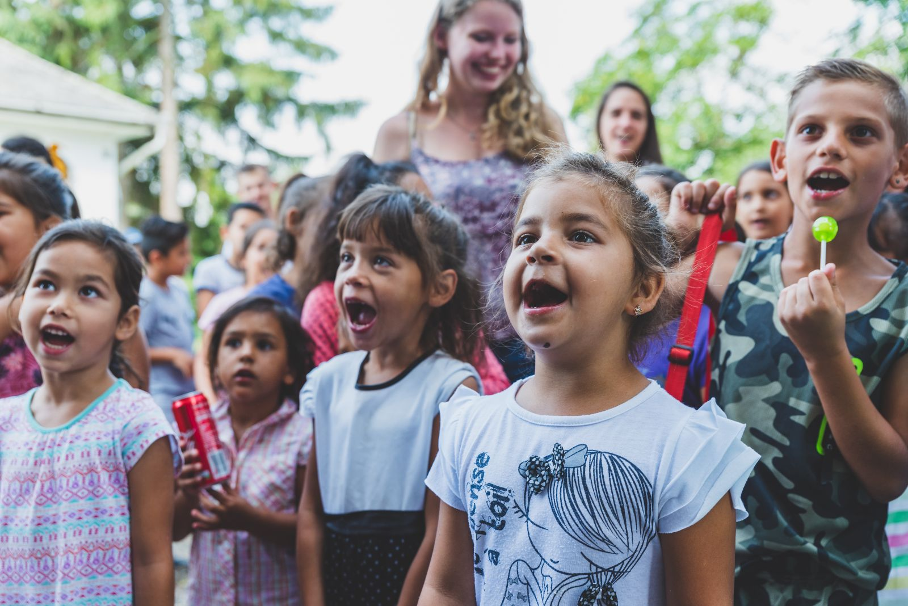
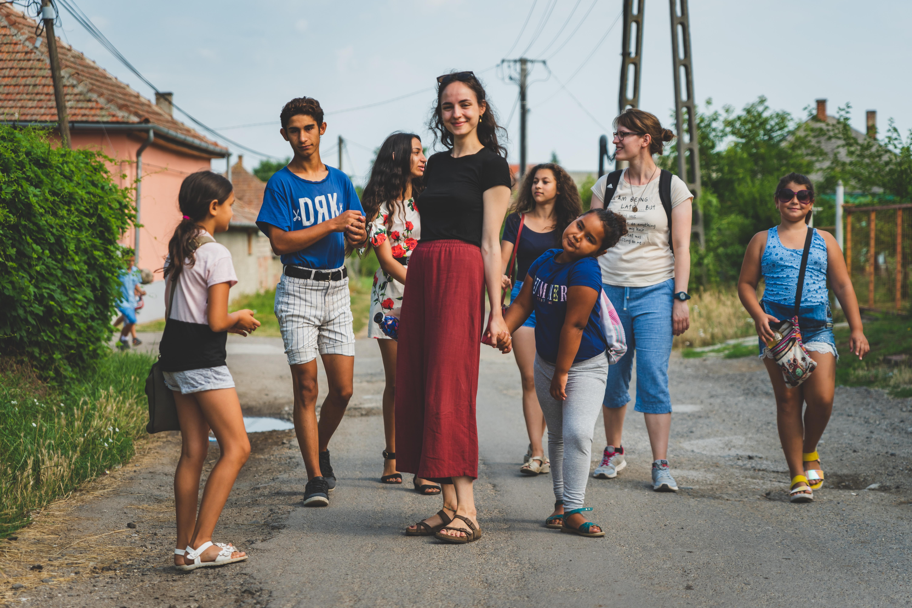
Ilyen Kerecsendért dolgozunk
Egy faluért, ahol érezhetően kisebbek lesznek a szociális helyzetből fakadó különbségek, és ahol az emberek egymást segítő, egyenrangú közösségekben élnek.
Szeretnénk, ha az egyesület és a falu közös munkája országosan ismert és elismert példa lenne. Ebbe a körbe mindenki belefér.
Rólunk és a csapatról →Tevékenységünk
7 állandó munkatárs, 7 óradíjas szakember és 3 közfoglalkoztatott dolgozik a programokban.
Családmentorálás és korai fejlesztés
Helyi családmentorok magzati kortól kísérik az édesanyákat és a kisgyermekeket. Korai mozgásfejlesztés, és magyar nyelvi fejlesztés a harmadik országból érkezett ukrán, vietnámi és filippínó gyerekeknek.

Gyerekek és kamaszok
Két pszichológus, fejlesztőpedagógus, gyógypedagógus és sportedző. Hétvégi programok, nyári napközi, táborok, környezetvédelmi foglalkozások, és a kamasz lányok életre való felkészítése.

Felnőttek és közösség
Munkaerőpiaci mentorálás, adósságtanácsadás, egészségügyi szűrések, lakhatási és kertprogram – hogy a családok kevesebb krízissel, biztosabb alapokon éljenek.
Rendszeres adományod lehetővé teszi, hogy hosszútávra tervezzünk
Szeretnénk, ha munkánk egyre kevésbé függne pályázatoktól és állami programoktól. Célunk, hogy éves bevételünk fele saját forrásból, magánszemélyek és cégek támogatásából származzon.
Hírek a munkánkról
Más módon is segíthetsz
11711096-21456499IBAN: HU68 1171 1096 2145 6499 0000 0000
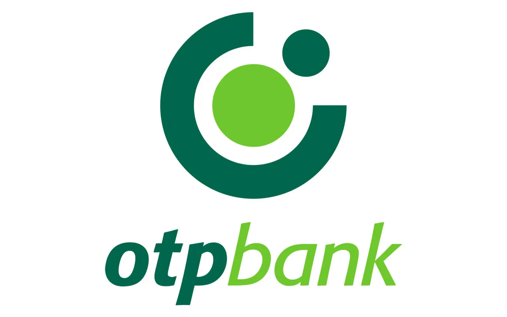
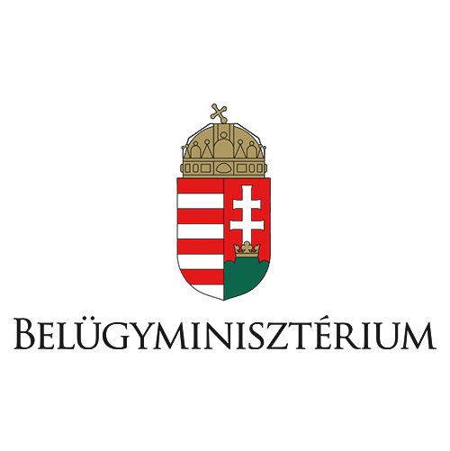
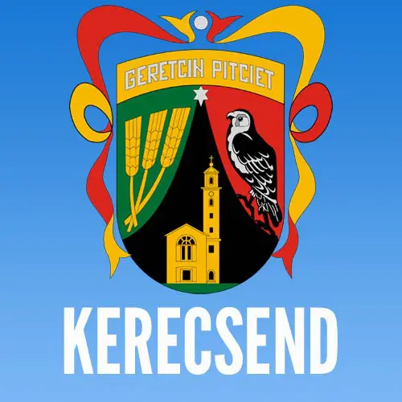
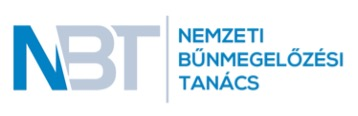
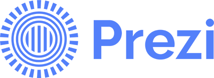
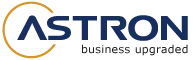
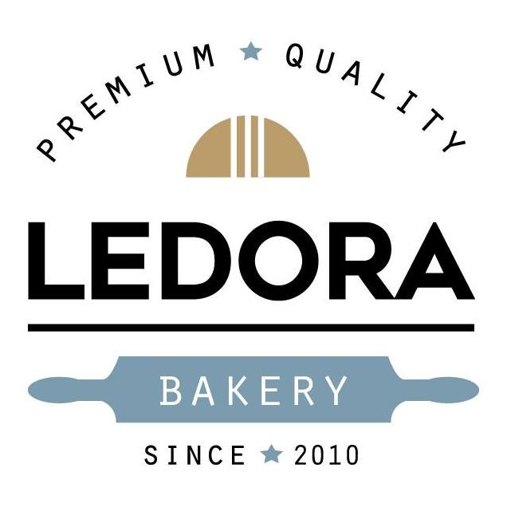
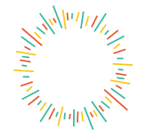
Világítani FogokEGYESÜLET · KERECSENDKicsiny kis fényemmel, világítani fogok!
Kerecsenden a nehéz sorsú családok, különösen a gyerekek életesélyeiért dolgozunk – hogy mindannyian aktív, egyenrangú és szabad tagjai lehessünk a társadalomnak.
Érezhetően lecsökkentek a településen a szociális helyzetből fakadó különbségek; egymást segítő, egyenrangú közösségek köré szerveződik a település.
Közösséget teremtünk, és arra hívjuk a tágabb társadalmat, hogy vállaljon felelősséget. Ebbe a körbe mindenki belefér.
Rólunk és a csapatról →Tevékenységünk
Minden program →Családmentorálás
A helyi roma közösségből származó családmentorok magzati kortól kísérik az édesanyákat és a kisgyermekeket.
Gyerekprogramok és táborok
Pszichológus és fejlesztőpedagógus, havi hétvégi programok, nyári napközi és évente több tábor.
Felnőttek és közösség
Adósságtanácsadás, munkaerőpiaci mentorálás, egészségügyi szűrések, lakhatási és kertprogram.
Rendszeres adományod lehetővé teszi, hogy hosszútávra tervezzünk
Szeretnénk, ha munkánk egyre kevésbé függne pályázatoktól és állami programoktól. Célunk, hogy éves bevételünk fele saját forrásból, magánszemélyek és cégek támogatásából származzon.
Hírek a munkánkról
Más módon is segíthetsz
11711096-21456499IBAN: HU68 1171 1096 2145 6499 0000 0000
Kicsiny kis fényemmel, világítani fogok!
Kerecsenden a nehéz sorsú családok, különösen a gyerekek életesélyeiért dolgozunk – hogy mindannyian aktív, egyenrangú és szabad tagjai lehessünk a társadalomnak.
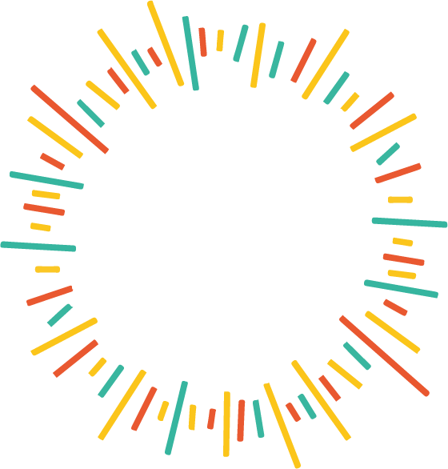
Világítani FogokEGYESÜLET · KERECSEND
Kicsiny kis fényemmel, világítani fogok!
Célunk, hogy csökkentsük a társadalmi hátrányokat. Célunk, hogy áthidaljuk a távolságot a leszakadó rétegek és a jóléti társadalom között.

Ebbe a körbe mindenki belefér
Célunk, hogy a kerecsendi gyerekek és családok is megtapasztalhassák a feltétel nélküli szeretetet és elfogadást.
Ismerd meg a csapatot →Tevékenységünk
Minden program →Családmentorálás
A helyi roma közösségből származó családmentorok magzati kortól kísérik az édesanyákat és a kisgyermekeket.
Gyerekprogramok és táborok
Pszichológus és fejlesztőpedagógus, havi hétvégi programok, nyári napközi és évente több tábor.
Felnőttek és közösség
Adósságtanácsadás, munkaerőpiaci mentorálás, egészségügyi szűrések, lakhatási és kertprogram.
Hírek a munkánkról
Hogyan segíthetsz?


Kicsiny kis fényemmel, világítani fogok!
Célunk, hogy csökkentsük a társadalmi hátrányokat.
Célunk, hogy áthidaljuk a távolságot a leszakadó rétegek és a jóléti társadalom között.
Ebbe a körbe mindenki belefér
Célunk, hogy a kerecsendi gyerekek és családok is megtapasztalhassák a feltétel nélküli szeretetet és elfogadást.
RólunkTevékenységünk
Minden program →Fogok
Ebbe a körbe mindenki belefér
Célunk, hogy a kerecsendi gyerekek és családok is megtapasztalhassák a feltétel nélküli szeretetet és elfogadást.
Kicsiny kis fényemmel, világítani fogok!
Napló
Minden bejegyzésTábor · júl. 13.Tábori hétfő: így indult a nyár
Mindennapok · aug. 28.Egy nap a családmentorainkkal
Hétvégi program · jún. 21.Erdei túra a legkisebbekkel